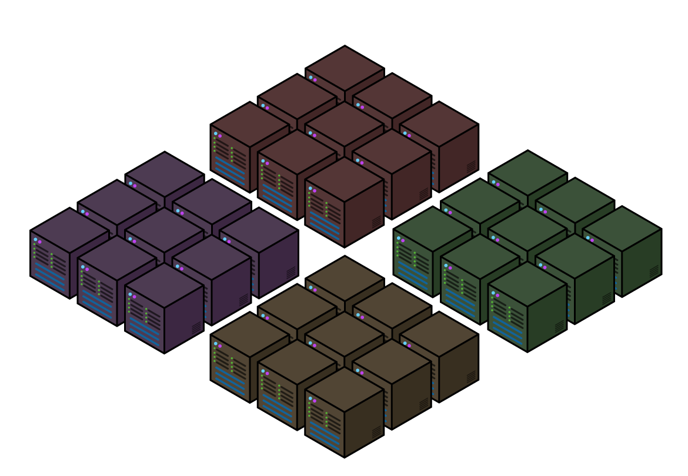
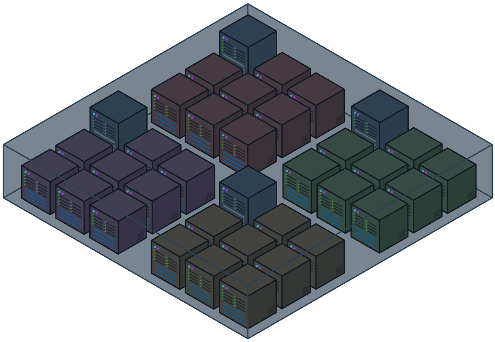
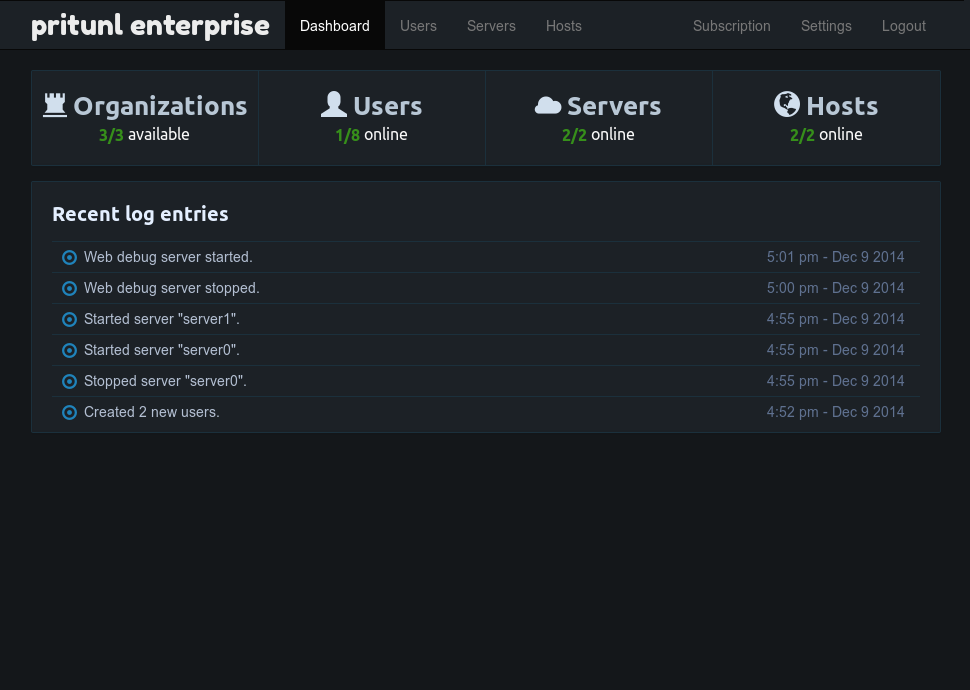
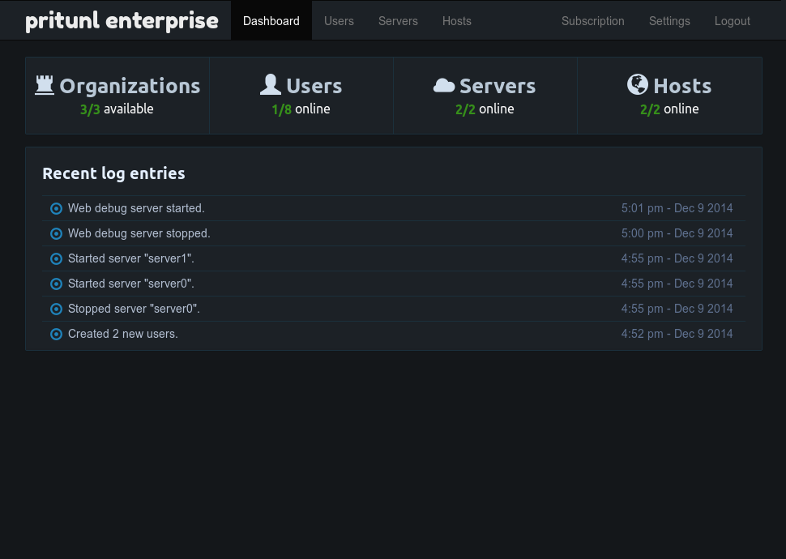
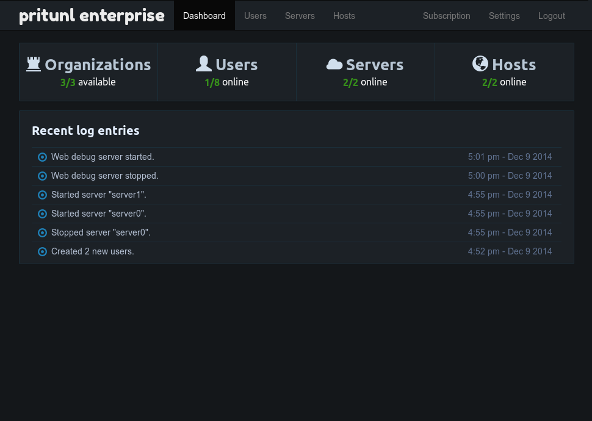

Virtualize your private networks across datacenters and provide simple remote access in minutes Demo
Simple Virtual Private Networks


Create a cloud vpn with complex site-to-site links, gateway links and provide local network access to remote users. Protect your network traffic and remote users connecting over public connections with secure encryption. All from a simple web interface
AWS VPN Server
Interconnect AWS VPC networks across AWS regions and provide reliable remote access with automatic failover that can scale horizontally
Securely deploy remote access to thousands of users using their existing company account with support for several single sign-on providers and protocols
Highly customizable Python plugin system to allow expanding and modifying Pritunl. Plugins can be created to support custom authentication systems and custom access control systems
Pritunl is the best open source alternative to proprietary commercial vpn products such as Aviatrix, Pulse Secure and Pertino. Create larger cloud vpn networks supporting thousands of concurrent users and get more control over your vpn server without any per-user pricing
Pritunl servers can be easily distributed across multiple servers and different datacenters for improved performance, high availability and automatic failover when an instance fails.
Simple Distribution
All server communication and interconnecting is done with MongoDB allowing servers to be quickly connected without having to modify firewalls for inter-server communication.
High Availability
All Pritunl servers are equal in the cluster and can run independently in the event of other instances failing.
Distributed and Scalable

Subscription Plans
Pritunl is free to use with optional monthly subscriptions available to purchase for additional features. The enterprise license may be used on all the servers in the cluster and does not require a individual license for each server.
No limit on the number of users created or users connected
Unlimited devices
No limit on the number of devices that each user has
connected
$0/month
Premium
Single server
Run a single Pritunl instance
Unlimited users
No limit on the number of users created or users connected
Unlimited devices
No limit on the number of devices that each user has
connected
Port forwarding
Forward ports to vpn clients
Gateway links
Create a gateway link to route traffic for a local network
to a vpn client. Allowing the vpn clients to access the
remote network that is available to the linked vpn client
Failover gateway links
Connect multiple gateway links to a Pritunl server and when
a link goes down another available link will automatically
be used
Bypass secondary auth
Per-user option to bypass secondary authentication such as
two-factor authentication. For server users that can't
provide a two-factor code
Chromebook support
Easily connect Chromebook users with ChromeOS compatible
vpn profiles
Configuration sync
When clients connect with a Pritunl client, vpn setting
changes such as port/protocol will be updated to allow the
client to connect without needing to download a new
configuration
Email user keys
Email users a link to download vpn profiles using a
configured SMTP server
All of the features included with a Premium subscription
Unlimited servers
No limit on the number of Pritunl instances in a single
Pritunl cluster
Single sign-on
Single sign-on with SAML, Google Apps, Duo Security and
Radius
Automatic failover
When a Pritunl instance fails the vpn servers running on the
instance will automatically failover to another available
Pritunl instance
Replicated servers
Replicate a vpn server accross multiple Pritunl instances to
easily scale horizontally to handle more user connections
VXLan support
Automatic VXLan management for replication across
availability zones without layer 2 connectivity while
still maintaining client-to-client communication
AWS VPC integration
Integrate with AWS VPC to allow Pritunl to dynamically
control the VPC routing table
Site-to-site VPN
Easily create a site-to-site link between two Pritunl
instances without any complicated configuration
Server route NAT control
Enable or disable NAT for server routes
DNS mapping
Map connected vpn clients to dns domains such as
user0.org0.vpn using a custom dns server
that runs along with the Pritunl server
DNS forwarding
Forward dns queries to a dns server on a remote network
such as a consul server on an AWS VPC
Monitoring
Monitor server and user metrics with InfluxDB
Advanced auditing
Optional advanced auditing of user and
administrator related events for improved
security and intrusion detection
Bridged VPN mode
Create tap servers that bridge the vpn clients to the servers
local network interface. Allowing vpn clients to get an ip
address on the servers local network
Multiple administrators
Allow multiple administrators to manage the Pritunl server
User pin policy
Control over requiring users to set a pin before they are
able to connect to a vpn server
Plugin system
Integrate Pritunl with other systems using plugins writen in
Python
API access
Manage Pritunl cluster using RESTful API with support for
multiple API keys
The initial setup for the AWS automated install will upgrade the system and Pritunl. The Pritunl server will not be accessible until the upgrade process completes.
Select a Linux distribution below and run the commands to install Pritunl. After installing no setup is necessary simply open the web interface at https://SERVER_IP/ in your web browser and login with the default username and password which is "pritunl".
Free and open source cross platform OpenVPN client. Connect to any OpenVPN server with a secure open source client. Additonal integration available when connecting to a Pritunl server. Free and open source alternative to Viscosity.


 
